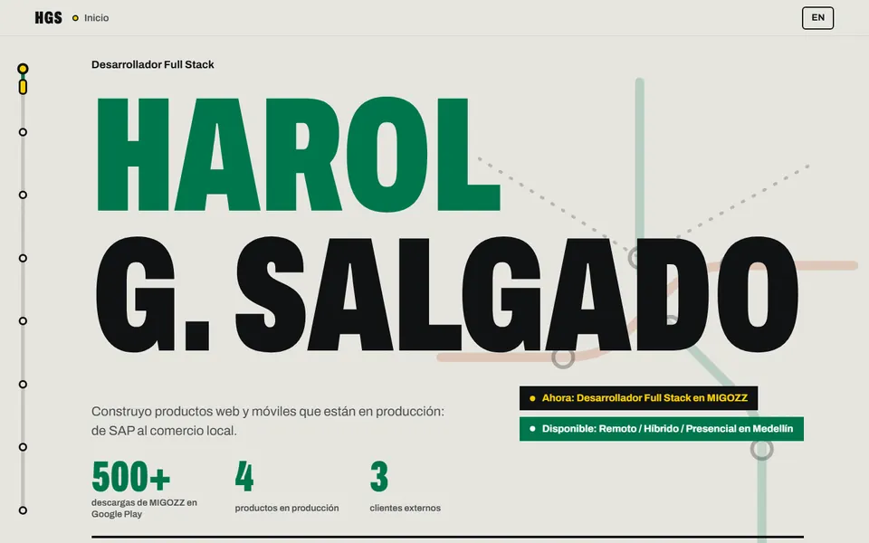
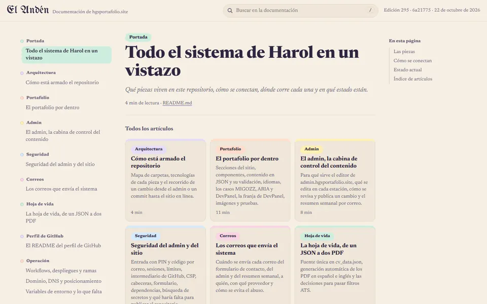

<!doctype html>
<!--
  Explainer video of the portfolio as a product (about 75 s, 1280 × 720). scripts/video.mjs records it to
  public/video/portafolio-<lang>.webm; open explainer.html?lang=es (or en) in a browser to watch it live.
  Every figure comes from window.VIDEO_DATA, which the recorder fills from the live monitor
  (health.hgsportafolio.site), so the video never shows a number nobody measured.
-->
<html lang="es">
  <head>
    <meta charset="utf-8" />
    <title>Portafolio HGS · video</title>
    <style>
      @font-face {
        font-family: "Archivo Variable";
        src: url("../../node_modules/@fontsource-variable/archivo/files/archivo-latin-wdth-normal.woff2")
          format("woff2");
        font-weight: 100 900;
        font-stretch: 62% 125%;
      }
      :root {
        --paper: #ebeae4;
        --paper-2: #dedcd3;
        --ink: #111315;
        --ink-dim: #484c50;
        --signal: #ffd400;
        --metro: #00794f;
        --line-b: #c2410c;
        --ease: cubic-bezier(0.2, 0.8, 0.2, 1);
      }
      * {
        box-sizing: border-box;
      }
      html,
      body {
        margin: 0;
        background: var(--paper);
      }
      .stage {
        position: relative;
        width: 1280px;
        height: 720px;
        overflow: hidden;
        background: var(--paper);
        color: var(--ink);
        font-family: "Archivo Variable", "Segoe UI", system-ui, sans-serif;
      }
      .scene {
        position: absolute;
        inset: 0 0 96px;
        padding: 64px 80px 0;
        opacity: 0;
        transition: opacity 0.5s ease;
      }
      .scene.on {
        opacity: 1;
      }
      .scene.dark {
        bottom: 0;
        background: var(--ink);
        color: var(--paper);
      }
      .in {
        opacity: 0;
        transform: translateY(26px);
        transition:
          opacity 0.6s var(--ease),
          transform 0.6s var(--ease);
      }
      .scene.on .in {
        opacity: 1;
        transform: none;
      }
      .scene.on .d1 {
        transition-delay: 0.25s;
      }
      .scene.on .d2 {
        transition-delay: 0.6s;
      }
      .scene.on .d3 {
        transition-delay: 1s;
      }
      .scene.on .d4 {
        transition-delay: 1.4s;
      }
      .scene.on .d5 {
        transition-delay: 1.8s;
      }
      .scene.on .d6 {
        transition-delay: 2.2s;
      }
      .kicker {
        display: inline-block;
        margin: 0 0 22px;
        padding: 6px 14px;
        border-radius: 999px;
        background: var(--signal);
        color: var(--ink);
        font-weight: 800;
        font-size: 20px;
        letter-spacing: 0.04em;
        text-transform: uppercase;
      }
      .display {
        margin: 0;
        font-weight: 900;
        font-stretch: 62%;
        text-transform: uppercase;
        font-size: 104px;
        line-height: 0.88;
      }
      .display .g {
        color: var(--metro);
      }
      .dark .display .g {
        color: var(--signal);
      }
      .lede {
        max-width: 860px;
        margin: 26px 0 0;
        font-size: 30px;
        line-height: 1.35;
        font-weight: 500;
        color: var(--ink-dim);
      }
      .dark .lede {
        color: #b7b8b2;
      }
      .split {
        display: grid;
        grid-template-columns: 1fr 560px;
        gap: 48px;
        align-items: start;
      }
      .split .display {
        font-size: 84px;
      }
      .shot {
        border: 4px solid var(--ink);
        background: var(--ink);
        box-shadow: 14px 14px 0 var(--signal);
      }
      .shot .bar {
        display: flex;
        gap: 7px;
        padding: 9px 12px;
        color: #b7b8b2;
        font-size: 14px;
        font-weight: 600;
      }
      .shot .bar i {
        width: 10px;
        height: 10px;
        border-radius: 50%;
        background: #3a3d40;
      }
      .shot .bar span {
        margin-left: 10px;
      }
      .shot img {
        display: block;
        width: 100%;
        height: 330px;
        object-fit: cover;
        object-position: top;
      }
      .points {
        display: grid;
        gap: 14px;
        margin: 28px 0 0;
        padding: 0;
        list-style: none;
        font-size: 27px;
        font-weight: 600;
      }
      .points li {
        position: relative;
        padding-left: 32px;
      }
      .points li::before {
        content: "";
        position: absolute;
        left: 0;
        top: 0.4em;
        width: 16px;
        height: 16px;
        border-radius: 50%;
        background: var(--signal);
        box-shadow: inset 0 0 0 3px var(--ink);
      }
      .struck li {
        transition: color 0.4s;
      }
      .scene.on .struck li {
        animation: strike 0.5s forwards;
      }
      .scene.on .struck li:nth-child(1) {
        animation-delay: 2.6s;
      }
      .scene.on .struck li:nth-child(2) {
        animation-delay: 3s;
      }
      .scene.on .struck li:nth-child(3) {
        animation-delay: 3.4s;
      }
      @keyframes strike {
        to {
          color: var(--line-b);
          text-decoration: line-through 4px;
        }
      }
      /* Línea de "cada cambio": paradas que se encienden una tras otra. */
      .line {
        position: relative;
        display: flex;
        justify-content: space-between;
        margin: 56px 0 0;
        padding: 0;
        list-style: none;
      }
      .line::before {
        content: "";
        position: absolute;
        left: 18px;
        right: 18px;
        top: 17px;
        height: 10px;
        background: var(--paper-2);
      }
      .line::after {
        content: "";
        position: absolute;
        left: 18px;
        top: 17px;
        height: 10px;
        width: 0;
        background: var(--metro);
        transition: width 4.6s linear 0.6s;
      }
      .scene.on .line::after {
        width: calc(100% - 36px);
      }
      .line li {
        position: relative;
        z-index: 1;
        display: grid;
        justify-items: center;
        gap: 12px;
        width: 170px;
        text-align: center;
        font-size: 21px;
        font-weight: 700;
      }
      .line li::before {
        content: "";
        width: 30px;
        height: 30px;
        border: 6px solid var(--ink);
        border-radius: 50%;
        background: var(--paper);
        transition: background 0.3s;
      }
      .scene.on .line li::before {
        background: var(--signal);
      }
      .scene.on .line li:nth-child(1)::before {
        transition-delay: 0.6s;
      }
      .scene.on .line li:nth-child(2)::before {
        transition-delay: 1.5s;
      }
      .scene.on .line li:nth-child(3)::before {
        transition-delay: 2.4s;
      }
      .scene.on .line li:nth-child(4)::before {
        transition-delay: 3.3s;
      }
      .scene.on .line li:nth-child(5)::before {
        transition-delay: 4.2s;
      }
      .scene.on .line li:nth-child(6)::before {
        transition-delay: 5.1s;
      }
      .line small {
        font-size: 17px;
        font-weight: 500;
        color: var(--ink-dim);
      }
      .figures {
        display: flex;
        gap: 56px;
        margin-top: 40px;
      }
      .figures div {
        display: grid;
        gap: 4px;
      }
      .figures b {
        font-weight: 900;
        font-stretch: 62%;
        font-size: 92px;
        line-height: 0.9;
        color: var(--metro);
      }
      .dark .figures b {
        color: var(--signal);
      }
      .figures span {
        max-width: 230px;
        font-size: 21px;
        font-weight: 600;
        color: var(--ink-dim);
      }
      .dark .figures span {
        color: #b7b8b2;
      }
      .url {
        display: inline-flex;
        align-items: center;
        gap: 12px;
        margin-top: 30px;
        padding: 12px 20px;
        background: var(--ink);
        color: var(--signal);
        font-weight: 800;
        font-size: 28px;
      }
      .dark .url {
        background: var(--signal);
        color: var(--ink);
      }
      .url i {
        width: 12px;
        height: 12px;
        border-radius: 50%;
        background: currentColor;
      }
      .urls {
        display: grid;
        gap: 14px;
        margin-top: 34px;
      }
      .urls .url {
        margin: 0;
        width: fit-content;
      }
      .lock {
        display: grid;
        place-items: center;
        width: 120px;
        height: 120px;
        margin-bottom: 26px;
        border-radius: 24px;
        background: var(--signal);
        color: var(--ink);
        font-weight: 900;
        font-stretch: 62%;
        font-size: 64px;
      }
      /* Línea de metro inferior: una estación por escena. */
      .track {
        position: absolute;
        left: 80px;
        right: 80px;
        bottom: 34px;
        height: 30px;
      }
      .track .rail {
        position: absolute;
        left: 0;
        right: 0;
        top: 12px;
        height: 6px;
        background: #c9c7bf;
      }
      .track .fill {
        position: absolute;
        left: 0;
        top: 12px;
        height: 6px;
        width: 0;
        background: var(--ink);
        transition: width 0.8s var(--ease);
      }
      .track .stop {
        position: absolute;
        top: 5px;
        width: 20px;
        height: 20px;
        margin-left: -10px;
        border: 4px solid var(--ink);
        border-radius: 50%;
        background: var(--paper);
        transition: background 0.3s;
      }
      .track .stop.passed {
        background: var(--signal);
      }
      .track .name {
        position: absolute;
        top: -26px;
        transform: translateX(-50%);
        font-size: 15px;
        font-weight: 800;
        white-space: nowrap;
        opacity: 0;
        transition: opacity 0.3s;
      }
      .track .name.here {
        opacity: 1;
      }
      /* Sobre una escena oscura la línea pasa a papel; el amarillo de las estaciones pasadas se queda. */
      .track,
      .track .rail,
      .track .fill,
      .track .stop {
        transition:
          background 0.5s,
          border-color 0.5s,
          color 0.5s,
          width 0.8s var(--ease);
      }
      .track.on-dark {
        color: var(--paper);
      }
      .track.on-dark .rail {
        background: #3a3d40;
      }
      .track.on-dark .fill {
        background: var(--paper);
      }
      .track.on-dark .stop {
        border-color: var(--paper);
        background: var(--ink);
      }
      .track.on-dark .stop.passed {
        background: var(--signal);
      }
    </style>
  </head>
  <body>
    <div class="stage" id="stage"></div>
    <script>
      const lang = new URLSearchParams(location.search).get("lang") === "en" ? "en" : "es";
      document.documentElement.lang = lang;
      const D = window.VIDEO_DATA || {};
      const n = (v, fallback = "—") => (v === undefined || v === null ? fallback : v);

      // Each scene: its station name, how long it stays and its markup (texts only from this file and VIDEO_DATA).
      const S = {
        es: [
          [
            "Inicio",
            6.5,
            `<p class="kicker in">Proyecto personal · Harol Guerrero Salgado</p><h1 class="display in d1">Portafolio HGS.<br><span class="g">Un portafolio<br>tratado como producto.</span></h1>`,
          ],
          [
            "Problema",
            7.5,
            `<p class="kicker in">El problema</p><h2 class="display in d1">Un portafolio<br><span class="g">envejece rápido.</span></h2><ul class="points struck in d2"><li>Cifras viejas</li><li>Enlaces rotos</li><li>Un CV que ya no dice lo mismo que la web</li></ul>`,
          ],
          [
            "Sitio",
            9,
            `<div class="split"><div><p class="kicker in">El sitio</p><h2 class="display in d1">Bilingüe,<br><span class="g">rápido y legible.</span></h2><ul class="points in d2"><li>React, TypeScript y Vite</li><li>Español e inglés</li><li>Google lo lee antes de que corra JavaScript</li><li>Casos de estudio con decisiones y errores</li></ul></div><div class="shot in d3"><div class="bar"><i></i><i></i><i></i><span>hgsportafolio.site</span></div></div></div>`,
          ],
          [
            "Admin",
            8,
            `<div class="scene-inner"><div class="lock in">HGS</div><p class="kicker in d1">El admin · por qué existe</p><h2 class="display in d2">Editar sin<br><span class="g">tocar código.</span></h2><p class="lede in d3">Cambio un texto y el admin hace el commit por mí. Es privado y se entra con dos factores: cómo está hecho no se publica.</p></div>`,
          ],
          [
            "Cada cambio",
            9.5,
            `<p class="kicker in">Cada cambio</p><h2 class="display in d1" style="font-size:84px">Nada sale <span class="g">sin pasar el CI.</span></h2><ol class="line in d2"><li>Pull request<small>o el admin</small></li><li>${n(D.tests, "+100")} pruebas<small>unitarias</small></li><li>Lighthouse<small>y axe</small></li><li>Secretos<small>gitleaks</small></li><li>main<small>se fusiona</small></li><li>Netlify<small>publica</small></li></ol><p class="lede in d6">${n(D.workflows, 15)} workflows de GitHub Actions. Ningún despliegue a mano.</p>`,
          ],
          [
            "Docs",
            8,
            `<div class="split"><div><p class="kicker in">La documentación</p><h2 class="display in d1">Se publica<br><span class="g">sola.</span></h2><p class="lede in d2">Cada cambio en la documentación sale a docs.hgsportafolio.site. La edición pública deja fuera lo privado.</p></div><div class="shot in d3"><div class="bar"><i></i><i></i><i></i><span>docs.hgsportafolio.site</span></div></div></div>`,
          ],
          [
            "Código",
            7,
            `<p class="kicker in">El código</p><h2 class="display in d1">Míralo<br><span class="g">tú mismo.</span></h2><p class="lede in d2">Un espejo público se actualiza con cada cambio en producción. Lista blanca: el sitio y sus workflows, nunca el admin ni los datos personales.</p><p class="url in d3"><i></i>github.com/DevCat-HGS/hgsportafolio</p>`,
          ],
          [
            "Health",
            10,
            `<div class="split"><div><p class="kicker in">health.hgsportafolio.site</p><h2 class="display in d1">Medido,<br><span class="g">no prometido.</span></h2><div class="figures in d2"><div><b>30</b><span>minutos entre cada comprobación</span></div><div><b>${n(D.mobile)}</b><span>rendimiento móvil (Lighthouse)</span></div><div><b>${n(D.desktop)}</b><span>rendimiento escritorio</span></div></div><p class="lede in d3" style="font-size:24px">Un monitor público, aparte de Netlify. Código, datos y logs a la vista.</p></div><div class="shot in d4"><div class="bar"><i></i><i></i><i></i><span>health.hgsportafolio.site</span></div></div></div>`,
          ],
          [
            "Compruébalo",
            9,
            `<p class="kicker in">¿Eres reclutador?</p><h2 class="display in d1">No me creas:<br><span class="g">compruébalo.</span></h2><div class="urls in d2"><p class="url"><i></i>hgsportafolio.site/portafolio</p><p class="url"><i></i>health.hgsportafolio.site</p><p class="url"><i></i>docs.hgsportafolio.site</p></div>`,
          ],
        ],
        en: [
          [
            "Start",
            6.5,
            `<p class="kicker in">Personal project · Harol Guerrero Salgado</p><h1 class="display in d1">Portafolio HGS.<br><span class="g">A portfolio<br>built as a product.</span></h1>`,
          ],
          [
            "Problem",
            7.5,
            `<p class="kicker in">The problem</p><h2 class="display in d1">A portfolio<br><span class="g">ages fast.</span></h2><ul class="points struck in d2"><li>Stale figures</li><li>Broken links</li><li>A résumé that no longer matches the site</li></ul>`,
          ],
          [
            "Site",
            9,
            `<div class="split"><div><p class="kicker in">The site</p><h2 class="display in d1">Bilingual,<br><span class="g">fast, readable.</span></h2><ul class="points in d2"><li>React, TypeScript and Vite</li><li>Spanish and English</li><li>Google reads it before any JavaScript runs</li><li>Case studies with decisions and mistakes</li></ul></div><div class="shot in d3"><div class="bar"><i></i><i></i><i></i><span>hgsportafolio.site</span></div></div></div>`,
          ],
          [
            "Admin",
            8,
            `<div class="scene-inner"><div class="lock in">HGS</div><p class="kicker in d1">The admin · why it exists</p><h2 class="display in d2">Edit without<br><span class="g">touching code.</span></h2><p class="lede in d3">I change some copy and the admin commits for me. It is private and takes two factors to sign in: how it is built is not published.</p></div>`,
          ],
          [
            "Every change",
            9.5,
            `<p class="kicker in">Every change</p><h2 class="display in d1" style="font-size:84px">Nothing ships <span class="g">without CI.</span></h2><ol class="line in d2"><li>Pull request<small>or the admin</small></li><li>${n(D.tests, "100+")} tests<small>unit</small></li><li>Lighthouse<small>and axe</small></li><li>Secrets<small>gitleaks</small></li><li>main<small>merges</small></li><li>Netlify<small>ships</small></li></ol><p class="lede in d6">${n(D.workflows, 15)} GitHub Actions workflows. No manual deploys.</p>`,
          ],
          [
            "Docs",
            8,
            `<div class="split"><div><p class="kicker in">The docs</p><h2 class="display in d1">They publish<br><span class="g">themselves.</span></h2><p class="lede in d2">Every docs change ships to docs.hgsportafolio.site. The public edition leaves the private parts out.</p></div><div class="shot in d3"><div class="bar"><i></i><i></i><i></i><span>docs.hgsportafolio.site</span></div></div></div>`,
          ],
          [
            "Code",
            7,
            `<p class="kicker in">The code</p><h2 class="display in d1">See it<br><span class="g">for yourself.</span></h2><p class="lede in d2">A public mirror updates with every change that ships. An allowlist: the site and its workflows, never the admin or personal data.</p><p class="url in d3"><i></i>github.com/DevCat-HGS/hgsportafolio</p>`,
          ],
          [
            "Health",
            10,
            `<div class="split"><div><p class="kicker in">health.hgsportafolio.site</p><h2 class="display in d1">Measured,<br><span class="g">not promised.</span></h2><div class="figures in d2"><div><b>30</b><span>minutes between checks</span></div><div><b>${n(D.mobile)}</b><span>mobile performance (Lighthouse)</span></div><div><b>${n(D.desktop)}</b><span>desktop performance</span></div></div><p class="lede in d3" style="font-size:24px">A public monitor, apart from Netlify. Code, data and logs in the open.</p></div><div class="shot in d4"><div class="bar"><i></i><i></i><i></i><span>health.hgsportafolio.site</span></div></div></div>`,
          ],
          [
            "Check it",
            9,
            `<p class="kicker in">Are you a recruiter?</p><h2 class="display in d1">Don’t take my word:<br><span class="g">check.</span></h2><div class="urls in d2"><p class="url"><i></i>hgsportafolio.site/en/portafolio</p><p class="url"><i></i>health.hgsportafolio.site</p><p class="url"><i></i>docs.hgsportafolio.site</p></div>`,
          ],
        ],
      }[lang];

      const dark = new Set([3, 7]);
      const stage = document.getElementById("stage");
      const scenes = S.map(([, , html], i) => {
        const s = document.createElement("section");
        s.className = dark.has(i) ? "scene dark" : "scene";
        s.innerHTML = html;
        stage.append(s);
        return s;
      });

      const track = document.createElement("div");
      track.className = "track";
      track.innerHTML = `<div class="rail"></div><div class="fill"></div>`;
      const stops = S.map(([name], i) => {
        const pos = (i / (S.length - 1)) * 100;
        const stop = document.createElement("i");
        stop.className = "stop";
        stop.style.left = `${pos}%`;
        const label = document.createElement("span");
        label.className = "name";
        label.style.left = `${pos}%`;
        label.textContent = name;
        track.append(stop, label);
        return [stop, label];
      });
      stage.append(track);
      const fill = track.querySelector(".fill");

      /** Total length in seconds, read by the recorder. */
      window.VIDEO_LENGTH = S.reduce((sum, [, d]) => sum + d, 0);

      function show(i) {
        scenes.forEach((s, j) => s.classList.toggle("on", j === i));
        stops.forEach(([stop, label], j) => {
          stop.classList.toggle("passed", j <= i);
          label.classList.toggle("here", j === i);
        });
        fill.style.width = `${(i / (S.length - 1)) * 100}%`;
        // The track turns light on dark scenes so it stays visible.
        track.classList.toggle("on-dark", dark.has(i));
      }

      window.play = () =>
        new Promise((resolve) => {
          let i = 0;
          const next = () => {
            if (i >= S.length) return resolve();
            show(i);
            setTimeout(next, S[i++][1] * 1000);
          };
          next();
        });
      // Opened by hand (no recorder): play straight away.
      if (!window.VIDEO_DATA) document.fonts.ready.then(() => window.play());
    </script>
  </body>
</html>
